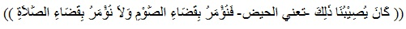
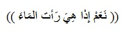

Solat Jama Qosor
Solat Jama Qosor
Berniat menjamak qasar salat Ashar dengan jamak ta'khir. Jika dilafalkan sebagai berikut:  ”Ushalli fardhal 'ashri raka'ataini qashran majmuu'an 'ilaihidh-dhuhri jam'a ta'khiiran lillaahi-ta'aala” Artinya: “Saya (niat) shalat fardhu ashar dua rakaat, qashar, dengan menjamak dhuhur kepadanya, karena Allah Ta'ala” Berdiri dan niat salat dhuhur, jika dilafalkan sebagai berikut:  ”Ushalli fardhadh-dhuhri raka'ataini qashran majmuu'an 'ilal 'ashru jam'a ta'khiiran lillaahi-ta'aala” Artinya: “Saya (niat) shalat fardhu dhuhur dua rakaat, dengan menjamaknya kepada ashar, karena Allah Ta'ala”
Jama' Qosor Ta'khir
Cara Melaksanakan Shalat Jamak Qashar Ta'khir, Dhuhur dengan Ashar